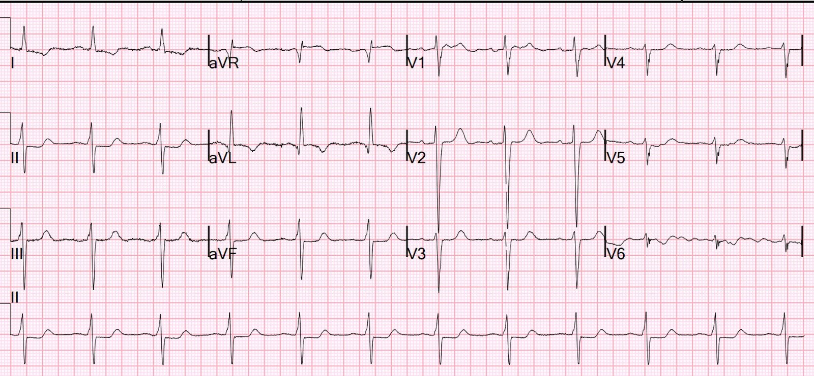
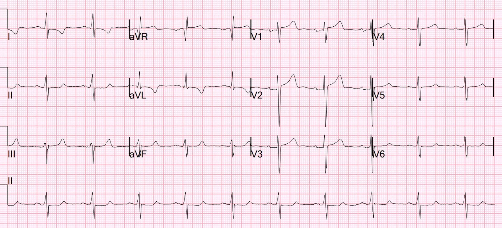
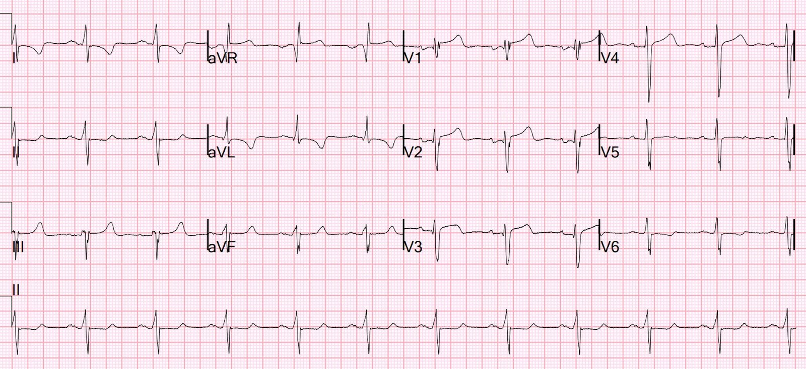
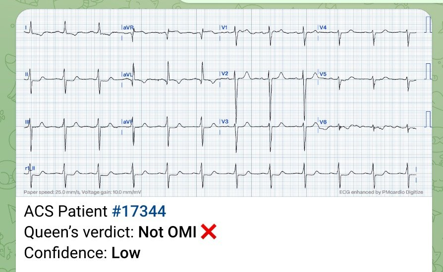
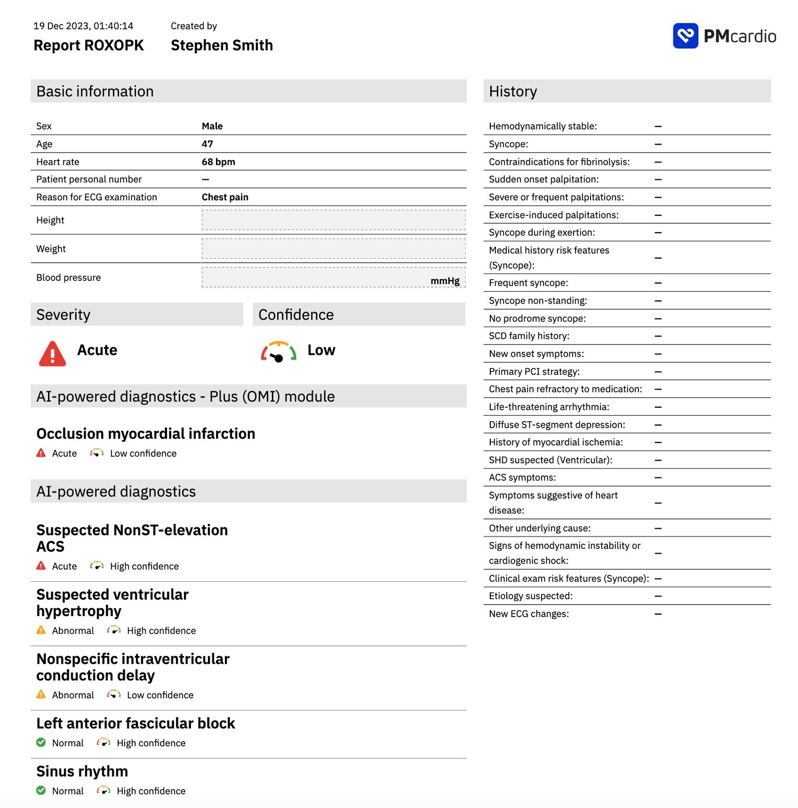
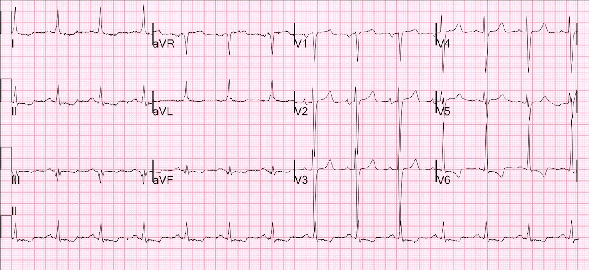
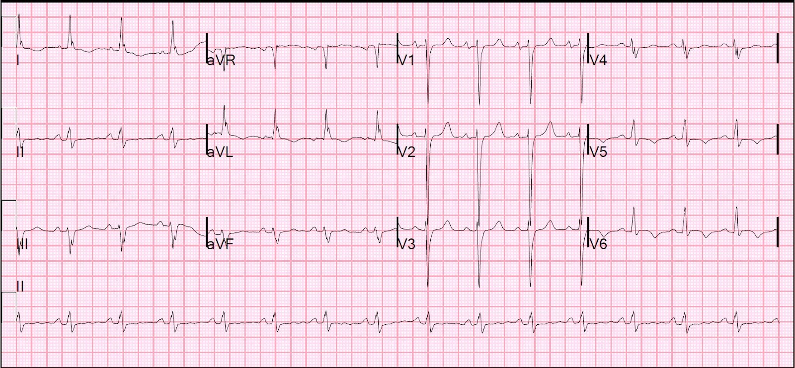
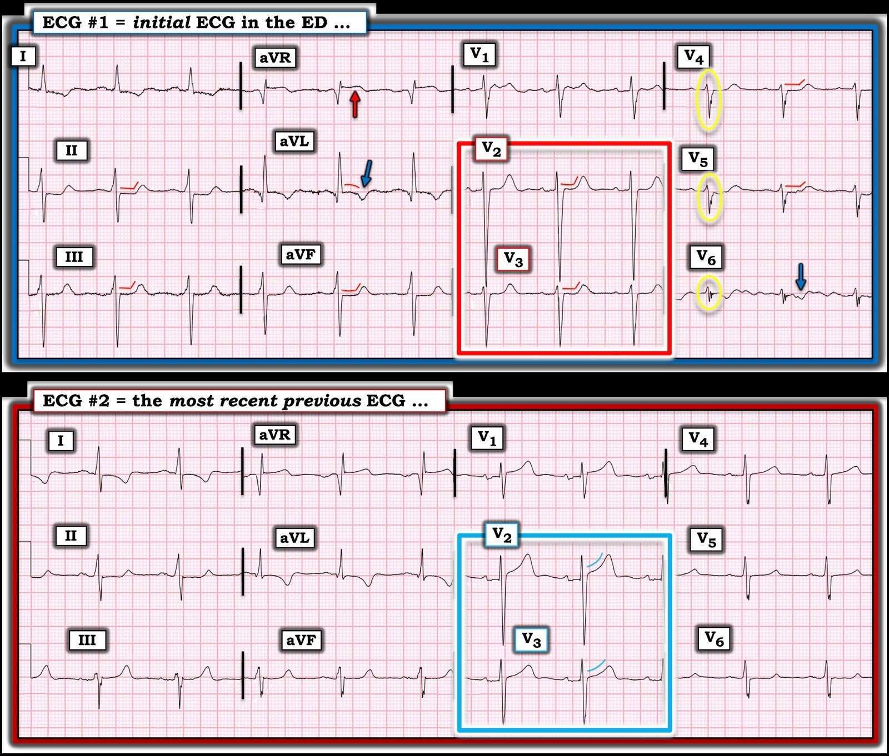

25/01/2024 — Đau ngực cấp ở bệnh nhân có LVH và đã biết bệnh mạch vành. Điện tâm đồ cho thấy gì?
Bản dịch tiếng Việt của bài "Acute chest pain in a patient with LVH and known coronary disease. What does the ECG show?" – Dr. Smith’s ECG Blog. Giữ nguyên toàn bộ 9 hình ảnh của bản gốc.
Một bệnh nhân ngoài 40 tuổi, đái tháo đường nặng, đang lọc máu và đã biết có bệnh mạch vành, đến viện vì đau ngực cấp kiểu bóp nghẹt.
Đây là điện tâm đồ của anh ấy tại khoa cấp cứu (ED):


Bạn nghĩ gì?
Có đoạn ST dẹt và dốc xuống ở V2 và V3. Điều này có thể do OMI thành sau.
Có điện tâm đồ cũ để so sánh không?
Đây là điện tâm đồ gần đây nhất trước đó:


Quả thật, đã có ST chênh lên bình thường ở V2 và V3, ngược hướng với sóng S tương đối sâu, có thể do một mức LVH nào đó.
Đây là một điện tâm đồ khác trước đó:


Vậy có vẻ đây là OMI thành sau. 2 năm trước, anh ấy được chụp mạch vành cho thấy hẹp 90% đoạn gần động mạch mũ. Có vẻ đây nhiều khả năng là động mạch liên quan đến nhồi máu.
Đến lúc này, tôi khá chắc chắn đây là OMI thành sau. Chúng tôi khởi động “Lộ trình B” (Pathway B), (lộ trình A là kích hoạt phòng thông tim (cath lab); lộ trình B là hội chẩn tim mạch về khả năng kích hoạt phòng thông tim).
Một cách hợp lý, họ khuyến nghị dùng NTG tĩnh mạch và đưa vào phòng thông tim nếu không hiệu quả.
Đây là kết quả đọc của Queen khi gửi lên bot telegram; cô ấy không có lợi thế được so sánh với điện tâm đồ cũ:


Nhưng khi tôi chạy nó qua ứng dụng PM Cardio, hiện đã có ở châu Âu, cô ấy cho kết quả OMI với độ tin cậy thấp.


Cơn đau không hết với NTG, vì vậy anh ấy được chụp mạch vành cấp cứu:
1. Thân chung (Left main): không có hẹp rõ.
2. LAD: tái hẹp trong stent nặng ở đoạn giữa (80%) và đoạn xa (90%)
và bệnh lan tỏa ở phía xa.
3. D1: hẹp mới (de-novo) nặng (90%) ở đoạn giữa đến đoạn xa.
4. Nhánh trung gian (ramus intermedius): lớn, tái hẹp trong stent nặng ở bờ xa
của stent (90%) và hẹp mới nặng ở đoạn lỗ xuất phát (90%).
5. LCX: không ưu thế. Bị tắc (nó nhỏ và không cấp máu nhiều trên lần chụp mạch
trước đó).
6. RCA: ưu thế: hẹp mới nặng (80%) đoạn gần. Nó cấp máu cho một
RPDA và RPLA lớn.
Kết quả chụp mạch này phù hợp với OMI thành sau cấp
Thông tim cho thấy bệnh nhiều nhánh mạch vành và sau khi thảo luận với phẫu thuật tim mạch, bệnh nhân được đánh giá là ứng viên kém cho phẫu thuật CABG do có nhiều bệnh đồng mắc và khả năng phục hồi chức năng kém; do đó, đã làm xạ hình tưới máu cơ tim (MPI) để đánh giá thêm, kết quả không thấy thiếu máu cục bộ hồi phục đáng kể, vì vậy đã quyết định điều trị nội khoa vì bệnh nhân đã hết triệu chứng gần hai ngày và ổn định về lâm sàng.
– Liệu pháp kháng tiểu cầu kép: tiếp tục ASA 81 mg và Plavix 75 mg mỗi ngày
– Tiếp tục atorvastatin 40 mg mỗi ngày
BẠN CŨNG CÓ THỂ CÓ BOT AI PM Cardio!! (ỨNG DỤNG AI OMI PM CARDIO)
Nếu bạn muốn bot này giúp bạn chẩn đoán sớm OMI và cứu bệnh nhân cùng cơ tim của họ, bạn có thể đăng ký để nhận bản beta sớm của bot tại đây.
https://share-eu1.hsforms.com/18cAH0ZK0RoiVG3RjC5dYdwfyfsg (biểu mẫu đăng ký nhận bản beta của bot)
Xem các bài liên quan sau:
—Một bệnh nhân lọc máu với triệu chứng không đặc hiệu và giả bình thường hóa đoạn ST (bệnh nhân có LVH và điện tâm đồ nền có ST chênh lên không do thiếu máu cục bộ ở V2, V3)


—OMI Can be Diagnosed by “Pseudonormalization of ST Segments” (OMI có thể được chẩn đoán bằng “giả bình thường hóa đoạn ST”)
(Bệnh nhân có LVH và điện tâm đồ LVH nền có ST chênh lên không do thiếu máu cục bộ ở V2, V3)



===================================
BÌNH LUẬN CỦA TÔI, bởi KEN GRAUER, MD (25/1/2023):
===================================
Ca bệnh thú vị hôm nay của Bác sĩ Smith mang đến một góc nhìn độc đáo: đánh giá điện tâm đồ ban đầu của một bệnh nhân đã từng có biến cố trước đó — và nay đến viện với triệu chứng mới.
- Theo Bác sĩ Smith — bệnh nhân hôm nay là một người ngoài 40 tuổi, đái tháo đường nặng, suy thận và đã biết có bệnh mạch vành — đến viện vì “đau ngực cấp kiểu bóp nghẹt”.
- Để rõ ràng và dễ so sánh, trong Hình 1 — tôi đã đặt lại điện tâm đồ ban đầu hôm nay, cùng với điện tâm đồ gần đây nhất trước đó của bệnh nhân.
- Trong phần bàn luận — Bác sĩ Smith nhấn mạnh đoạn ST dẹt và dốc xuống ở các chuyển đạo V2,V3. Vì vậy, ông rất lo ngại về OMI thành sau cấp.
Hãy XEM LẠI điện tâm đồ #1 — trước khi bạn xem lại bản ghi gần đây nhất trước đó.
CÂU HỎI:
- Xét bệnh sử lúc vào viện hôm nay — Bạn còn thấy GÌ KHÁC trên điện tâm đồ #1?
Để thuận tiện so sánh trong Hình 1 giữa điện tâm đồ ban đầu hôm nay và điện tâm đồ gần đây nhất trước đó — tôi đã đóng khung các chuyển đạo MẤU CHỐT trong các hình chữ nhật ĐỎ và XANH, theo thứ tự tương ứng.
- Khi bạn XEM LẠI điện tâm đồ #1 so với điện tâm đồ #2 — 2 bản ghi này khác nhau thế nào?
- Nếu chỉ được cho biết rằng điện tâm đồ #2 là “điện tâm đồ gần đây nhất trước đó” — Điều này có thể có ý nghĩa gì về mặt lâm sàng?


“Đào sâu” (Deep Dive) phân tích 2 điện tâm đồ đầu tiên trong CA BỆNH hôm nay:
Bác sĩ Smith đã kết luận đúng rằng với bệnh nhân hôm nay, người đến viện vì “đau ngực mới kiểu bóp nghẹt” — điện tâm đồ ban đầu, khi được đọc trong bối cảnh 2 điện tâm đồ trước đó tìm được — về cơ bản xác nhận OMI thành sau cấp. Dù vậy, tôi nghĩ có thể sẽ hữu ích nếu “lần lại” chuỗi suy nghĩ tuần tự của tôi khi xem ca này:
- Lúc đầu tôi chỉ xem điện tâm đồ #1 trong Hình 1 — mà không biết chi tiết bệnh sử (ngoài việc bệnh nhân này đến khoa cấp cứu, có lẽ vì đau ngực).
Xem kỹ hơn điện tâm đồ ban đầu:
Nhịp trên điện tâm đồ #1 là nhịp xoang ~70/phút. Mọi khoảng đều bình thường (PR, QRS, QTc).
- Trục mặt phẳng trán lệch trái đủ để đạt tiêu chuẩn LAHB (tức là QRS chủ yếu âm ở chuyển đạo II — do đó xác định trục lệch trái rõ ràng âm hơn -30 độ).
- Có LVH — với tiêu chuẩn điện thế thỏa ở chuyển đạo aVL (R ở aVL ≥12 mm) — và đặc biệt là sóng S rất sâu ở chuyển đạo V2 (đo được hơn 25 mm).
- Thấy một sóng Q khá lớn ở chuyển đạo aVL.
- Tăng tiến sóng R kém — ở chỗ vùng chuyển tiếp (nơi sóng R cao hơn độ sâu của sóng S) không bao giờ xuất hiện! Mặc dù LAHB có thể làm chậm vùng chuyển tiếp (do mất một phần lực khử cực hướng ra trước) — nhưng nó thường không tạo ra những sóng R nhỏ xíu như chúng ta thấy trên điện tâm đồ #1, trong đó sóng R ở các chuyển đạo V5,V6 không vượt quá 2 mm biên độ.
- Cũng có phân mảnh rõ rệt ở phần đi lên cuối của sóng S tại các chuyển đạo trước tim bên V4,V5,V6, với khía rõ rệt (trong các hình bầu dục VÀNG ở các chuyển đạo trước tim bên này).
- Về sóng ST-T — Có ST dẹt ở nhiều chuyển đạo (các đường ĐỎ ở các chuyển đạo II,III,aVF; và ở V2,V3,V4,V5).
- Đoạn ST dạng vòm nhưng đẳng điện ở chuyển đạo aVL — với sóng T đảo ngược khá sâu, đối xứng ở chuyển đạo này (mũi tên XANH ở aVL). Sóng T cũng đảo ngược ở các chuyển đạo I và V6 (mũi tên XANH ở V6).
- Cuối cùng — Có ST chênh lên ở chuyển đạo aVR (mũi tên ĐỎ ở chuyển đạo này).
- Tổng hợp lại tất cả: Trước khi biết bệnh sử — từ điện tâm đồ #1 tôi đã nghi ngờ bệnh nhân này có bệnh nhiều nhánh mạch vành đáng kể vì: i) Có ST dẹt bất thường ở 7/12 chuyển đạo (các chuyển đạo II,III,aVF; và ở V2,V3,V4,V5) — kèm sóng T đảo ngược bất thường ở 3 trong số các chuyển đạo còn lại (các chuyển đạo I,aVL,V6); ii) Có ST chênh lên ở chuyển đạo aVR; và, iii) Có phân mảnh rõ rệt — vốn là một chỉ điểm thường gặp của “sẹo” (trong các hình bầu dục VÀNG ở các chuyển đạo V4,V5,V6).
- Điểm MẤU CHỐT: Ngoài các dấu hiệu nêu trên gợi ý bệnh nhiều nhánh mạch vành nền — ST thẳng đuỗn, với góc gập đột ngột tại chỗ nối giữa đoạn ST và sóng T dương theo sau ở các chuyển đạo V2 và V3 (trong hình chữ nhật ĐỎ ở điện tâm đồ #1) — rõ ràng là bất thường, vì ở các chuyển đạo này thông thường đoạn ST phải hơi chênh lên và dốc lên thoai thoải. Theo Bác sĩ Smith, ở một bệnh nhân có đau ngực mới — các đoạn ST dẹt này ở các chuyển đạo V2,V3 gợi ý OMI thành sau cấp cho đến khi chứng minh được điều ngược lại.
- Tôi nghĩ rằng sóng T đảo ngược ở các chuyển đạo bên, cùng với sóng T nhọn-hơn-mong-đợi ở các chuyển đạo dưới và ở các chuyển đạo V2,V3 — có thể phản ánh sóng T tái tưới máu vùng dưới-sau-bên.
SUY NGHĨ CỦA BẠN khi so sánh điện tâm đồ #1 với điện tâm đồ #2?
Xin nhấn mạnh — Việc so sánh giữa điện tâm đồ #1 và điện tâm đồ #2 trở nên khó khăn vì chúng ta chỉ được cho biết rằng điện tâm đồ #2 là “điện tâm đồ gần đây nhất trước đó” của bệnh nhân hôm nay.
- Điện tâm đồ #2 rõ ràng bất thường. Có ST dẹt ở nhiều chuyển đạo — kèm đoạn ST dạng vòm bất thường, với sóng T đảo ngược sâu hơn ở các chuyển đạo bên cao I và aVL so với trên điện tâm đồ #1. Điều quan trọng là cần biết bối cảnh lâm sàng tại thời điểm ghi điện tâm đồ #2 (tức là Điện tâm đồ #2 có liên quan đến một nhồi máu gần đây không? — HAY — Bản ghi này có phản ánh điện tâm đồ “nền” thực sự của bệnh nhân này không?).
- Dù vậy — Hãy chú ý hình dạng sóng ST-T ở các chuyển đạo V2,V3 (tức là trong hình chữ nhật XANH nhạt ở điện tâm đồ #2). Đây là hình dạng mà một sóng ST-T “bình thường” nên có ở các chuyển đạo này — hơi chênh lên, với đoạn ST đi lên dốc thoai thoải.
- ĐIỀU CỐT LÕI: Mặc dù chúng ta không biết bối cảnh lâm sàng tại thời điểm ghi điện tâm đồ #2 (và nhiều chuyển đạo cũng cho thấy ST dẹt tương tự như trên điện tâm đồ #1) — không nghi ngờ gì rằng hình dạng sóng ST-T ở các chuyển đạo V2 và V3 trở nên bất thường rõ rệt đi kèm với “đau ngực cấp kiểu bóp nghẹt” tại thời điểm ghi điện tâm đồ #1. Theo Bác sĩ Smith, ở bệnh nhân có bệnh nhiều nhánh mạch vành nền này — điện tâm đồ ban đầu hôm nay có giá trị chẩn đoán OMI thành sau cấp mới cho đến khi chứng minh được điều ngược lại.